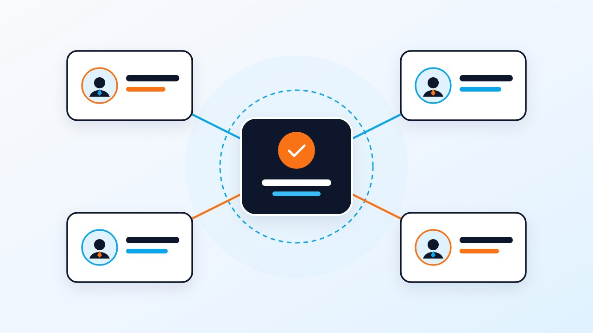

スタッフ3〜5人の少人数陣営が勝つための鍵は、「事務所の留守番や電話連絡などの間接業務」をデジタルツールでゼロに近づけ、全員の時間を「有権者との直接接点（街頭・ポスター貼付・SNS発信）」に集中させることです。ポスター管理はPoliDash、日々の活動記録と日報共有はPoliStepで自動化しましょう。
「選挙事務所に常駐してくれるスタッフなんていない」「平日は仕事がある友人2〜3人と家族だけで選挙戦を回さなければならない」——若手や無所属の新人候補者にとって、人手不足は最もリアルな課題です。
しかし、従来の選挙陣営で多くの人手が必要だったのは、「紙の地図への色塗り」「電話での現在地確認」「手作業での集計」といったアナログな間接業務に時間を奪われていたからです。本記事では、3〜5人の少人数チームでも無理なく高密度に回るデジタル運営モデルを解説します。
1. 少人数陣営が「やめるべき作業」と「デジタル化すべき作業」
人手が限られている陣営では、まず「やらなくていいこと」を決めるのが先決です。
| 従来の陣営業務 | 少人数陣営での見直し方針 | 代替するデジタルツール |
|---|---|---|
| 告示日のポスター貼り電話点呼 | 本部での電話集計を廃止し、スマホ地図上で各自が完了タップする方式へ統一 | PoliDash（ポリダッシュ）の登録不要共有URLとリアルタイム進捗マップ |
| 毎日の手書き活動集計・日報作成 | 候補者自身が現地でピン記録し、ワンタップでSNS・LINE用の縦型日報画像を出力 | PoliStep（ポリステップ）のワンタップ記録＆日報画像自動生成 |
| 電話での政策・経歴の個別説明 | チラシと名刺のQRコードから24時間いつでも閲覧できる公式Webサイトへ集約 | PoliSide（ポリサイド）によるスマホ最適化ホームページ |
2. 告示日当日を3〜5人で乗り切るタイムマネジメント
少人数陣営にとって最大の山場は「告示日当日の午前中」です。候補者本人は立候補届出と第一声に向かうため、残りの数名で市内・区内の公営掲示板へポスターを貼り切る必要があります。
- 事前にAIで人数分の最適ルートを作っておく：PoliDashに掲示板の住所リストを一括登録し、「3チーム」または「4チーム」を指定してAIで一筆書きの巡回ルートを生成しておきます。
- 当日はLINEで専用URLを開くだけ：ボランティアは自分のスマホで専用URLを開けば、次にどの掲示板へ向かえばよいかが地図上で一目で分かります。
3. 支援者を「観客」から「仲間」に変える日報共有の仕組み
当日現場に来られない支援者や、仕事終わりに1時間だけ手伝ってくれる仲間に対しても、PoliStepで自動生成した「本日の活動日報画像」を毎晩LINEグループやSNSで共有しましょう。「今日はここまで進んだ！」という可視化が、少人数チームの熱量と連帯感を高めます。
ポスター割り振りと進捗をスマホで一元管理「PoliDash（ポリダッシュ）」
掲示場所の住所リストをコピペするだけで地図上にピンを一括自動配置。AIがスタッフ人数や移動手段に合わせて最適な巡回ルートを自動生成し、ログイン不要の専用URLをLINEで送るだけでリアルタイムに進捗を同期できます。
よくある質問（FAQ）
Q 高齢のボランティアスタッフがいてもデジタルツールは使えますか？
はい、PoliDashもPoliStepも、共有用URLをタップするだけでブラウザ上に地図が開く設計になっており、IDやパスワードの入力が不要なため、LINEが使える方であれば迷わず操作できます。
Q 選挙期間中にボランティアへ報酬を支払うことはできますか？
公職選挙法により、選挙運動に従事する者（ポスター貼りやビラ配りなどのボランティア）へ報酬を支給することは原則として厳しく禁止されています（買収罪となります）。報酬を支払えるのは、事前に選挙管理委員会へ届け出た法定枠内の事務員、車上運動員（ウグイス嬢等）、手話通訳者・要約筆記者に限られますので絶対にご注意ください。
Q 少人数陣営で候補者自身の負担を減らすコツは何ですか？
告示日以降の事務作業やルート作成をすべて告示1ヶ月前までにデジタル化して終わらせておき、選挙期間中の候補者は「街頭での演説と有権者との対話」だけに100%集中できる体制を作ることです。
本記事は一般的な政治活動・選挙準備の情報提供を目的としており、特定の法的判断や選挙運動を誘導するものではありません。告示日前の投票依頼（事前運動）や戸別訪問、寄附行為等は公職選挙法により厳しく制限されています。選挙の種類や自治体によって運用・届出要件が異なる場合がありますので、実際の活動や制作物の仕様については必ず事前に管轄の選挙管理委員会へご確認ください。